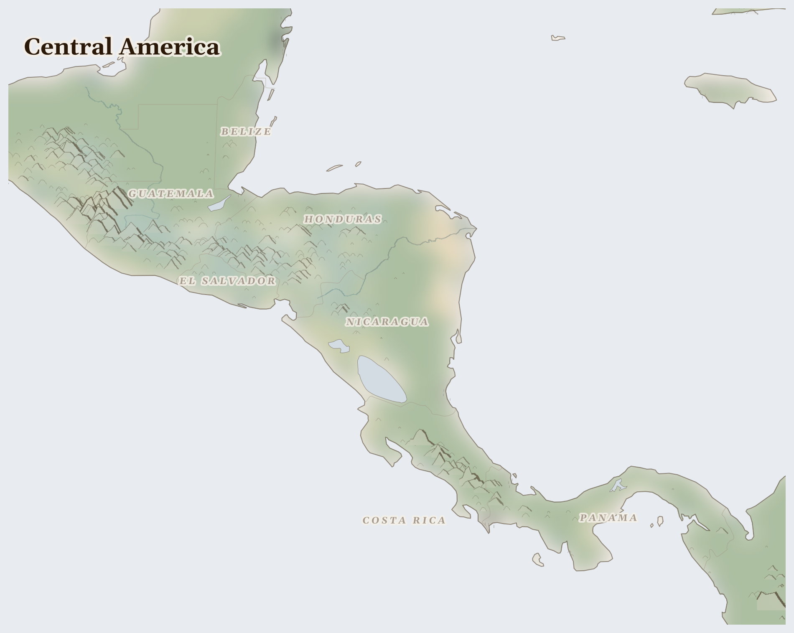

Central America158M people
where volcanic andosol gives milpa farming its fertility, and cyclone corridors deliver the rain that strips it
In the western highlands of Guatemala, at 1,500 metres where the cloud forest begins, a Q'eqchi' Maya woman rises before dawn to plant her milpa. She digs the holes with a pointed stick — maize here, beans beside it, squash to shade the soil — the same three seeds in the same arrangement her grandmother planted, and her grandmother before that, for four thousand years on this hillside. The rains should come in May. Last year they came late.
Lives Lived Here
Before dawn in the Huehuetenango highlands, a Maya farmer picks coffee cherries by hand into a basket strapped across her forehead. She is paid by weight — a good day is $4 — and the cherries travel from her hands to the wet mill in the valley, to the dry mill near the coast, to a container at Puerto Quetzal, to a roaster in Portland who sells the beans as "single-origin Huehuetenango" for $22 a bag. She has never tasted what they make from it. Her daughter, who finished secondary school, works at a call centre in Guatemala City. Her son left for Arizona two years ago. He sends $200 a month through Western Union. The transfer costs $12. The $200 is more than she earns in a month from coffee.
In San Pedro Sula, a woman packs shirts at a maquiladora — an export-processing factory in the free trade zone where Honduran labour law bends to foreign investment terms. She earns the minimum wage, which does not cover rent and food for her three children. The shirts will carry labels from brands sold in malls she will never enter. Her husband was a campesino in Colón before Dinant Corporation cleared their communal plot for oil palm. He drives a taxi now. On the radio, another environmental defender has been killed — the fourth this year — and no one has been arrested.
In Tapachula, on Mexico's southern border, a Honduran family waits. They left San Pedro Sula after the second extortion demand — pay the tax or lose the house. The journey through Guatemala took eight days. Now they wait for a transit permit that may take months. The shelter is full. The children attend a makeshift school run by a Catholic sister who speaks enough Garífuna to teach them. The father picks fruit on a nearby farm for cash. The mother calls her sister in Houston every Sunday evening to say they are fine. They are not fine. But they are together, and the road still goes north.
In Limón Province, a Nicaraguan migrant on a banana plantation slices bunches from the stem with a machete, his arms stained blue from the fungicide Chiquita requires on every hand of fruit. He crossed the border six months ago because there was no work at home that paid enough to eat. His remittances keep his mother and two sisters fed in Matagalpa. The bananas reach Miami in eleven days. The money reaches Matagalpa in three minutes.
In Limón Province, a Nicaraguan migrant on a banana plantation slices bunches from the stem with a machete, his arms stained blue from the fungicide Chiquita requires on every hand of fruit. He crossed the border six months ago because there was no work at home that paid enough to eat. His remittances keep his mother and two sisters fed in Matagalpa. The bananas reach Miami in eleven days. The money reaches Matagalpa in three minutes.

Reference map. Country boundaries and features are approximate.
What Presses
The weight on Central America
Guatemala's Dry Corridor — From Chiquimula east through Zacapa and into the lowlands where Guatemala meets Honduras, the land turns dry and stays dry. This is the Dry Corridor — a strip of rainfed agriculture where 3.4 million people cannot feed themselves and there is no irrigation system to fall back on. The milpa goes in when the May rains come. Last year the rains came late. This year, precipitation is running at 16% of normal. A farmer here plants maize and beans on a hillside that loses topsoil with every heavy rain and cracks with every drought. She cannot afford fertiliser. She cannot afford to wait. She plants and watches the sky. Her neighbour's son left for the US in January. He has not called.
San Pedro Sula, Honduras — In the free trade zone on the edge of the city, women sew garments for brands they cannot afford. Their husbands, many of them former campesinos from Colón and Atlántida, lost their communal land to palm oil — Dinant Corporation cleared it, the courts did nothing, and when community leaders protested, some of them were killed. Honduras has the highest rate of environmental defender killings per capita in the world, and the killing is done with impunity. The Garífuna communities on the coast have won rulings from the Inter-American Court of Human Rights. The rulings exist on paper. The plantations exist on the ground. In the neighbourhood outside the free trade zone, a family pays the weekly extortion fee to the local mara. If they cannot pay, they leave. If they leave, the house becomes someone else's. This is how a city empties from the inside.
Tapachula, Mexico — The city on Mexico's southern border was never built for this. Tens of thousands of Central Americans — Hondurans, Guatemalans, Salvadorans, and increasingly Venezuelans, Haitians, Cubans who crossed the Darién Gap — wait here for transit permits, asylum hearings, a coyote, or the courage to walk. The shelters are full. Catholic sisters and Protestant pastors run kitchens that feed hundreds daily. Children attend makeshift schools. The wait can last months. During the wait, the money runs out, the vulnerability grows, and the cartels that control the northward routes set prices that rise with desperation. A Honduran mother waiting here knows the route ahead: the freight trains, the desert, the wall. She also knows what is behind her. She left because staying was worse.
Nine flows leave Central America — coffee, bananas, palm oil, pineapples, avocados, gold, migrant labour, remittances, and the canal tolls that every container ship pays to cross from the Atlantic to the Pacific. What does not come back is the topsoil, stripped by monoculture and flooding; the groundwater, drained by avocado orchards and pineapple plantations; the mangroves, cleared for shrimp ponds and export crops; and the people, 1.2 million displaced and uncounted more walking north. Panama's Supreme Court shut down the Cobre Panamá mine in 2023 after mass protests by Ngäbe-Buglé communities and urban Panamanians — a rare instance where extraction was stopped before the damage was done. The copper is still in the ground. The question is whether it stays there. 1,408 killed (3 months); 6.1M food insecure (current); 1.2M displaced (total); diaspora remittances, coffee beans, coffee beans leaving; precipitation 16% of normal; 370 fires (7 days).
This Week
Guatemala: Guatemala reports ongoing measles surveillance across departments, with public health systems strained by concurrent food insecurity affecting 3.4 million people in the western highlands and Dry Corridor.
The milpa does not know it is ancient. It only knows the rain came or did not come. The woman planting it does not think of herself as the keeper of a four-thousand-year tradition. She thinks about whether the beans will be enough to last until December.
For Prayer
For the 6.1 million people across Central America who cannot meet their daily food needs. That supply routes hold, that harvests come, that aid reaches those cut off.
For the 1.2 million people displaced from their homes — especially in Mexico, where the crisis is most acute. This week in Honduras: In 2025, restricted migration routes and escalating armed violence exposed millions of children in Latin America and the Caribbean to exploitation, recruitment, and family separation.. For safety on the road and welcome at the journey's end.
For communities enduring armed conflict between Sinaloa Cartel and Jalisco New Generation Cartel across Central America — 1,000 killed in the past three months. For protection of civilians and for those who have lost loved ones.
Especially for Mexico, facing the most severe convergence of crises in this region. For those making impossible decisions about whether to stay or flee, and for those who cannot choose.
For humanitarian workers and missionaries in Central America — for their safety, their courage, and their capacity to reach those most in need.
For every act of resistance and care in Central America — communities sharing food, farmers saving seed, neighbours sheltering neighbours. That these small acts of defiance outlast the crisis.
Out of the depths have I cried to you, O Lord; Lord, hear my voice; let your ears consider well the voice of my supplication.
Most merciful God, who by the death and resurrection of your Son Jesus Christ delivered and saved the world: grant that by faith in him who suffered on the cross we may triumph in the power of his victory; through Jesus Christ your Son our Lord, who is alive and reigns with you, in the unity of the Holy Spirit, one God, now and for ever.
Amen.
Seeds of Hope
In Panama in 2023, something happened that almost never happens: the people won. Ngäbe-Buglé indigenous communities and urban Panamanians marched together — tens of thousands blocking roads across the country — until the Supreme Court declared First Quantum Minerals' Cobre Panamá mining contract unconstitutional. The copper stayed in the ground. The mine closed. It remains closed.
For Reflection
Whose hunger makes your abundance possible?
What does it mean to pray 'give us this day our daily bread' alongside those who lack it?
Looking Ahead
- The March-May dry season is the hungriest period in the Dry Corridor, and precipitation at 16% of normal with temperatures 5.3 degrees above baseline signals a primera planting season under severe stress.
- If the May rains fail or arrive as flood events — as they have in recent years — Guatemala's 3.4 million food insecure will grow.
- Honduras faces the same rainfall dependency with 1.8 million already in crisis.
- Central America's Dry Corridor lean season June-August -- 3.4 million food insecure in Guatemala alone; the caniculas (mid-summer dry spells) determine whether the milpa harvest succeeds or fails
- Honduras environmental defender killings -- Global Witness reports annually in September; Honduras remains the most dangerous country on earth for those who challenge palm oil and mining concessions
- US immigration policy shifts -- any border enforcement changes directly affect migration flows through Tapachula and the Darien Gap, reshaping transit risks for hundreds of thousands
Carry This
What to bring with you from this briefing
Take Action
Organizations working at the nodes this briefing traces
Produces field-based analysis of organized crime, migration drivers, and political instability across Guatemala, Honduras, and El Salvador. Documents the intersection of gang violence, state corruption, and climate-driven displacement.
Analyzes the migration drivers the briefing traces — where coffee price volatility, hurricane destruction of milpa agriculture, extortion by armed groups, and drought in the Dry Corridor converge to force communities into northward migration, with remittances then becoming the economic lifeline for those who remain.
Promotes rule of law and human rights in Latin America through legal analysis, judicial reform advocacy, and documentation of attacks on Indigenous and environmental defenders in Central America.
Defends the environmental and Indigenous activists the briefing identifies as cost-bearers — land defenders in Honduras (the deadliest country for environmentalists), community leaders opposing hydroelectric and palm oil projects on Indigenous territory, and journalists documenting extractive industry corruption.
GRAIN works with small farmers to document corporate capture of agricultural systems, seed patenting, and land grabbing. Tracks African palm expansion in Guatemala and Honduras that displaces milpa agriculture and Indigenous communities.
Documents the agricultural transformation the briefing traces — where African palm monoculture displaces the milpa polyculture system (maize, beans, squash) that sustained rural Central American communities, concentrating land ownership while pushing smallholders into migration or wage labor on the same plantations.
Operates food security, agricultural resilience, and migration support programs across the Dry Corridor of Guatemala, Honduras, and El Salvador. Works with farming communities adapting to drought and hurricane cycles.
Works directly with the Dry Corridor communities the briefing identifies — smallholder farmers whose maize harvests fail in consecutive drought years, families rebuilding after Hurricanes Eta and Julia, and households negotiating the decision between migration north and remaining on stressed land.
Supports Indigenous communities across Central America in defending land rights, cultural heritage, and self-determination. Amplifies Indigenous media, supports community radio, and documents violations of free prior and informed consent.
Amplifies the Indigenous voices the briefing centers — Maya communities in Guatemala's highlands resisting mining and hydroelectric projects, Lenca communities in Honduras defending rivers against dams, and Garifuna communities on the Caribbean coast fighting tourism development and land dispossession.
Generated 2026-03-18